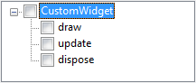

Override Method
Description
The Override Method code generator creates method bodies for a class. To do this, the methods
of the super class are considered and and can be choosen. Now the methods will
be inserted into the class. The added methods will have the same signature as the one
from the super class. Like this the super class method will be overridden.
In Ruby, the constructor is called "initialize" and not named after the class name as in
Java or C++. Because of this the code generator Override Method contains implicitly the
code generator known as Add Constructor from Superclass. If a constructor is overridden
its method body will contain a super call with the appropriate arguments to the super
class constructor.
Conditions
There should be a class deriving from another to be able to override the methods.
There should be methods which can be overridden in the super class.
Options

From the tree on the left side the methods to be overridden can be selected. The method bodies will
be generated in the subclasses.

Feedback